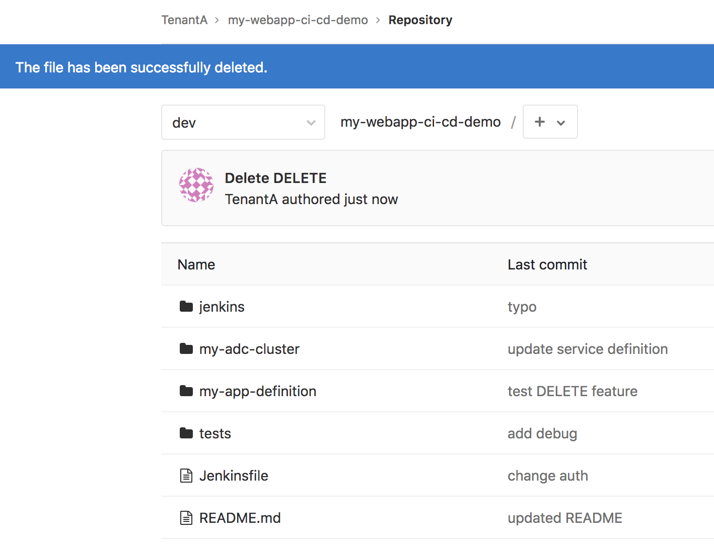
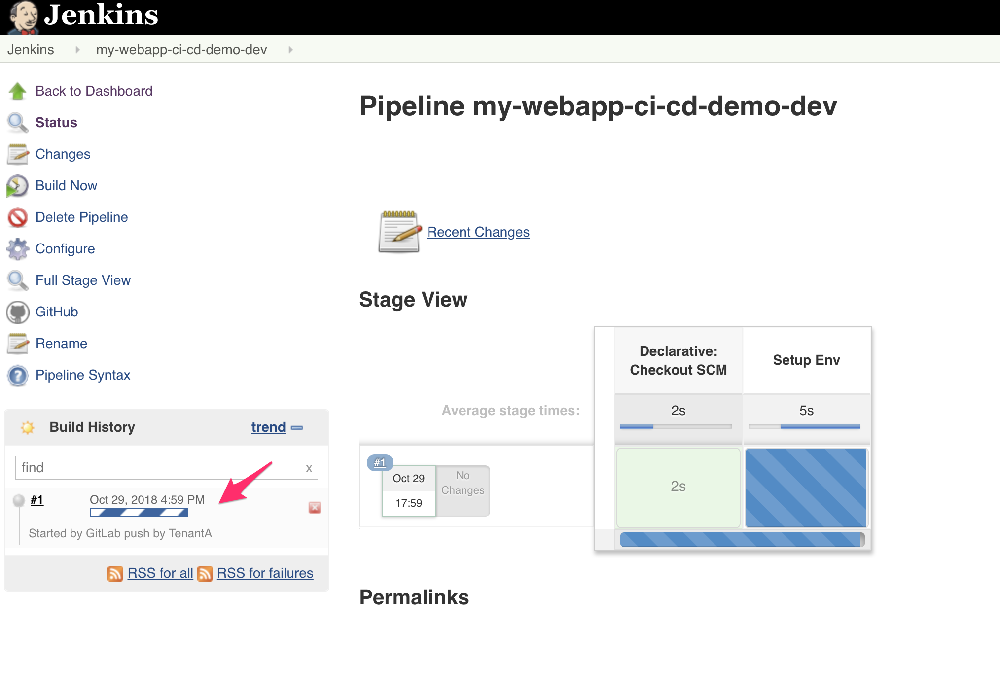
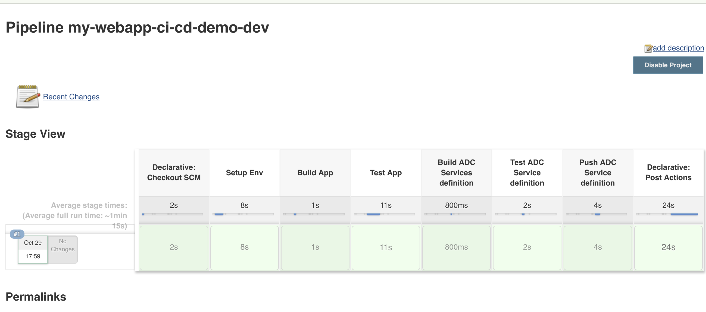
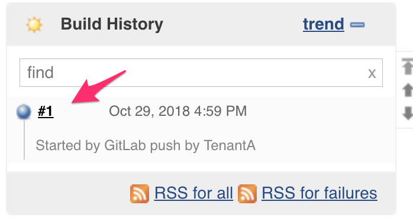
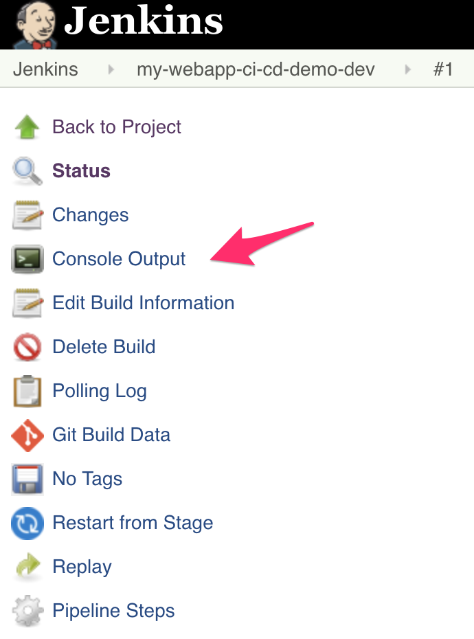
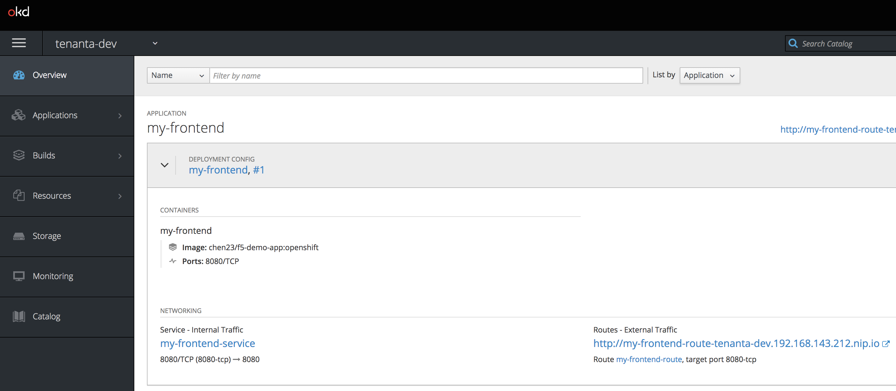
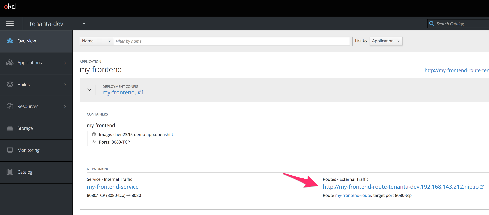
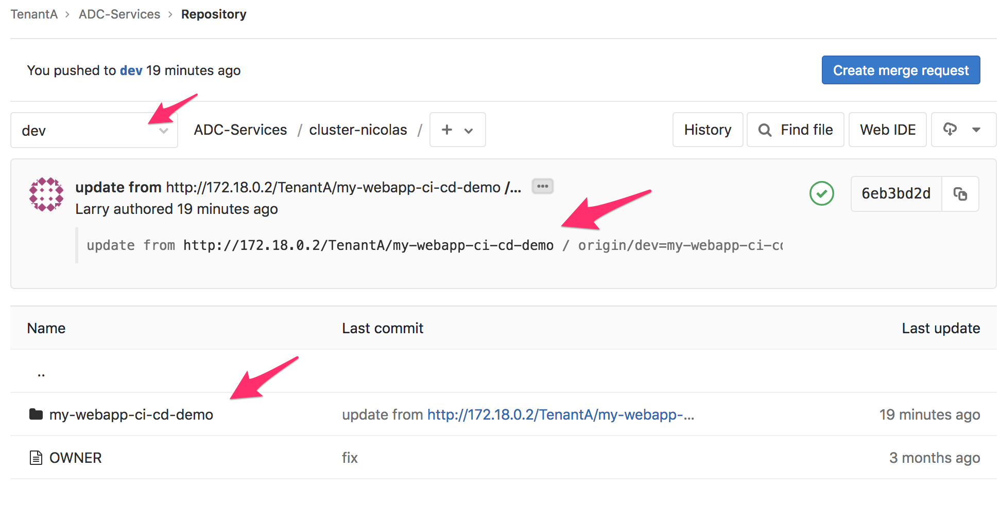
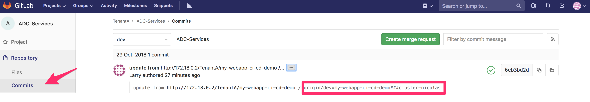
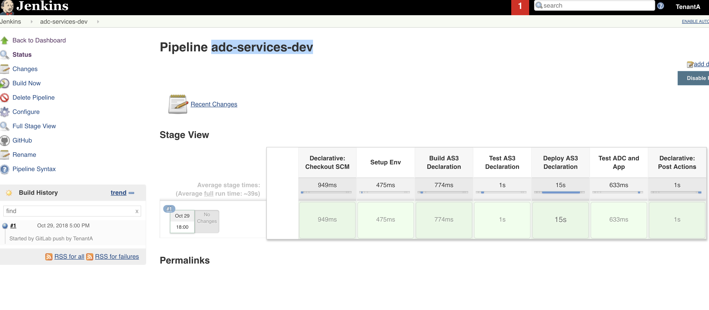

Deploy a new application¶
Prepare the demo¶
Here is the recommended worklow to do this demo.
Open different tabs in your browser:
Open 3 GitLab tabs:
- one for the my-webapp-ci-cd-demo repo. don’t forget to go to the DEV branch (login: TenantA,Password: Pa55w0rd)
- one for the ADC-Services repo. don’t forget to go to the DEV branch. (Login: TenantA,Password: Pa55w0rd)
- one for the Security Policies repo. (login: root, Password: Pa55w0rd - go to Projects > Explore Projects > All)
Open 2 Jenkins tabs: one for the my-webapp-ci-cd-demo-dev project and the other one for the adc-services-dev project. don’t forget to go to the DEV branch.
Open 1 tab on your BIG-IP to show its configuration (highlight that there is no tenanta-dev partition)
Note
if you use the UDF Blueprint, the BIG-IP login/password is admin/admin.
Open 1 tab on your minishift deployment (login: dev, password: dev). Go in the tenanta-dev project
Note
if you use the UDF Blueprint, we can’t access directly Minishift unfortunately. Use the the Jumphost to access Minishift
Warning
if you use F5 private cloud UDF, make sure minishift is up and running. If it’s not, check the steps mentioned in the documentation of the blueprint/deployment. You likely need to run again:
/home/centos/ci-cd-env-setup/build-env.sh minishift
if it doesn’t work, you can try the following:
cd /home/centos/ci-cd-env-setup
minishift stop
minishift delete
rm -rf minishift
./build-env.sh minishift
Make sure that:
- the DELETE file exists in the my-webapp-ci-cd-demo repo.
- the cluster-nicolas folder in the ADC-Services repo should be empty except for an OWNER file.
- Your BIG-IP configuration doesn’t have a tenanta-dev partition
- You don’t have any App deployed in your minishift system in the tenanta-dev project.
{kind=link}
{kind=link}
{kind=link}
{kind=link}
Before triggering the application deployment, it may good good to give a brief overview of the setup:
- Highlights the different DevOps tools used: Gitlab, Jenkins, Consul, Minishift, BIG-IP, AS3
- Explain what are the 3 GitLab repo and who owns each (TenantA is an application owner while Larry is part of the SecOps team).
- Describe how WebHooks will trigger our Jenkins pipelines
- Explain how the my-webapp-ci-cd-demo-dev pipeline will automatically manage the ADC-Services repo.
- Explain that the ADC-Services repo becomes the “Source of Truth” of ADC services deployment (you can talk about Infrastructure as Code (IaC)
Everything is detailed in module1.
Trigger the application deployment¶
In this demo, we use the DELETE file to leverage either the APP deployment, or its removal:
- if the DELETE file is added to the repo: we will remove the application and its ADC services
- if the DELETE file is removed from the repo: we will deploy the application and its ADC services
If everything is up and running as expected, you’ll only need to do the following to trigger the deployment of the application:
- Remove the DELETE file from the my-webapp-ci-cd-demo repo.
- if you use an editor instead of the GitLab UI, make sure to commit your changes to trigger the WebHook.
Here is how to do it from the GitLab UI:
- Open the tab showing your my-webapp-ci-cd-demo repo and click on the DELETE file. (make sure to be in the dev repo!)
{kind=link}
- Click on the red DELETE button on the right
{kind=link}
- Confirm that you want to delete the file by clicking on the Delete File button.
{kind=link}
As soon as you’ll do it from the GUI of GitLab, it will be committed.
{kind=link}
At this moment, switch to the Jenkins tab showing the pipeline called my-webapp-ci-cd-demo-dev. You will see a new build being triggered after a few seconds.
{kind=link}
Here you can see the different steps being processed in this pipeline:
- build app: the application gets deployed in Openshift
- test app: we run the different tests against the application and make sure we get the right response code (defined in the folder tests in the repo my-webapp-ci-cd-demo)
- build ADC services definition: we extract the IP of the application to add it to the service definition provided in the my-webapp-ci-cd-demo repo.
- Test ADC Service definition: We test this service definition against the targetted BIG-IP cluster to ensure it is properly defined without errors
- Push ADC Service definition: We update the repo ADC-Services in our Gitlab repo to add this application in the right cluster. Here it is in the cluster-nicolas directory
If everything goes as expected, you should see the whole line of the build being green:
{kind=link}
Note
if you have a step failing, the whole build will stop. To troubleshoot it, don’t hesitate to click on the build number and then Console Output
 {kind=link}
{kind=link}
Here you’ll see the whole pipeline being executed with all the different outputs. Check for any relevant error messages
We can check that the application has been deployed successfully, go to your minishift tab and you should see a new application:
{kind=link}
You can click on the route link to ensure the application works as expected.
{kind=link}
{kind=link}
The last step of the build updated the ADC-Services repo to add our new application services.
Go to the tab opened on GitLab and on your ADC-Services repo (make sure to be in the dev branch!).
Click on the folder cluster-nicolas. you should see a new directory called my-webapp-ci-cd-demo. This was pushed by our pipeline processed by Jenkins
{kind=link}
Click on this newly provisioned folder my-webapp-ci-cd-demo
You’ll see two files:
- service-definition: it contains the service definition that was provided by the app owner in the other repo. This service definition was updated with the relevant pool member delivering the app (minishift IP)
- tests.json: we also copied the tests file from the application repo since we want to make sure the same tests will behave in an identical manner through the ADC
We can review the commit that was done by the CI server Jenkins by clicking on the commit menu
{kind=link}
Here we can see that the commit message provide some useful information that will be used later: the application name and which BIG-IP cluster has been targetted for this new ADC service.
Since we updated the ADC-Services repo, it also triggered a WebHook to the CI Server Jenkins. Go to your other tab on Jenkins related to the project called adc-services-dev. You will see that a build has also been triggered:
{kind=link}
Here are the different steps of this build:
- Build AS3 Declaration: We identify which cluster has been updated based on the commit log that we reviewed previously. We will parse all the application folders in the relevant BIG-IP cluster to create a single AS3 declaration for the whole tenant. The AS3 tenant name will be based on the Gitlab tenant (ie TenantA) and the related branch (dev)
- Test AS3 Declaration: we do a dry run of the AS3 declaration to make sure no errors, mistakes are identified
- Deploy AS3 Declaration: if the previous dry run is successful, we deploy this time the AS3 declaration
- Test ADC and App: We run the different tests against the updated BIG-IP to ensure all the tests still behave as expected
If everything is processed properly, the whole build line should be green as you may see on the picture above.
You can go to your BIG-IP tab, to see if a new application service has been deployed:
- Select the partition tenanta-dev
- check the virtual server and its description. The description of the VS will be the name of the application to which we appended the branch name
{kind=link}
Check the settings of the Virtual Server to show that a WAF policy has been assigned to it.
You can try to reach the application through the BIG-IP now. Be aware that you’ll need to either:
- update your hosts file to add the minishift/openshift FQDN of the app and tie it to your virtual server IP
- use the IP but you need to enforce a Host header with the right fqdn
This is because Openshift/Minishift route based on the FQDN of the app.
In this example, the FQDN to use is : my-frontend-route-tenanta-dev.192.168.143.212.nip.io